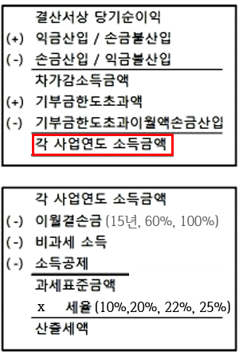

법인세법-2
충당금.준비금
@
{법인_대손사유}
대손사유
신고조정사항
㉠ 소멸시효가 완성된 채권
㉡ 회수불능으로 확정된 채권By{회생계획인가결정.법원면책결정}
㉢ 경매가 취소된 압류채권By{민사집행법}
㉣ 「서민의 금융생활 지원에 관한 법률」에 따른 채무조정을 받아 면책으로 확정된 채권
어쩌고저쩌고...
주요결산조정사항
㉠ 부도발생일부터 6월 이상 지난 수표.어음.외상매출금
(외상매출금은 중소기업인 경우에만)
㉡ 채무자의 {파산.강제집행.사망.실종.행방불명}
㉢ 회수기일 6개월 이상 지난 채권 중 채권가액이 30만원 이하
(채무자별 합계액 기준)
㉣ 금융회사의 채권 중 금융감독원장으로부터 대손승인을 받은 것과 대손처리 요구를 받아 대손금으로 계상한 것
㉤ 화해 및 화해권고결정 등 확정판결과 같은 효력을 가지는 것으로 회수불능으로 확정된 채권
㉥ 중소기업의 외상매출금.미수금으로서 회수기일이 2년이상 지난 것
(특수관계인과의 거래분 제외)
㉦ 물품의 수출 외국에서의 용역제공으로 발생한 채권 중 일정한 사유에 해당하여 한국무역보험공사로부터 회수불능확인된 채권
㉧ 중소기업창업투자회사의 창업자에 대한 채권으로서 중소벤처기업부장관이 기획재정부장관과 협의하여 정한 기준에 해당한다고 인정한 것
㉨ 물품의 수출 또는 외국에서 용역제공으로 발생한 채권으로서 기획재정부령으로 정하는 사유에 해당하여 한국무역보험공사로부터 회수불능으로 확인된 채권
어쩌고저쩌고...
@
대손충당금
대손충당금 설정제외 채권
1.특수관계인에 대한 업무무관 가지급금
2.구상채권by채무보증
3.부당행위계산에 해당하는 시가초과액
4.매각거래에 해당하는 할인.배서양도 어음
---
대손충당금 손금산입한도
= 세법상 설정대상 기말채권가액x대손설정률
---
대손설정률 = Max(1%, 대손실적률)
---
대손실적률 = 세법상 당기 대손금/전기말 세법상 채권가액
.
대손불능채권
1.특수관계인에 대한 업무무관 가지급금
2.구상채권by채무보증
3.대손세액공제 받은 매출세액 미수금
시행령.제19조의2
(대손금의 손금불산입)
④ 법인이 다른 법인과 합병하거나 분할하는 경우로서 대손금을 합병등기일 또는 분할등기일이 속하는 사업연도까지
손비로 계상하지 아니한 경우 그 대손금은 해당 법인의 합병등기일 또는 분할등기일이 속하는 사업연도의 손비로 한다.
부당행위계산의 부인
특수관계인과의 거래 + 조세부담을 부당하게 감소
특수관계
: 법인과 경제적 연관관계 또는 경영지배관계 등
: 상대방을 기준으로 본인이 특수관계인의 요건에 해당하지 않은 경우에도 본인을 기준으로 상대방이 특수관계인의 요건에 해당하면 본인은 상대방의 특수관계인에 해당
: 어느 일방을 기준으로 특수관계가 있으면 쌍방이 특수관계자가 됨
@
{법인_부당행위계산의 부인}
부당행위계산의 부인
(1)고가매입
:자산을 시가보다 높은 가액으로 매입
:자산을 시가보다 높은 가액으로 현물출자 받음
(=비싸게 주식을 사줌)
____현물출자 받다(주식을 매입하다, 주식을 사주다)
(2)저가양도
:시시가보다 낮은 가액으로 양도
:시가보다 낮은 가액으로 현물출차 함
:(=싸게 주식을 줌)
__현물출자 하다(주식을 양도하다)
(3)저리대여,고리차용
어쩌고저쩌고...
---
중요성 요건
: 시가와 거래가액의 차액이 시가의 5%이상이거나 3억원 이상.
---
조세의 부당감소로 인정되지않는 경우
㉠법인 업무의 수행을 위해 초청된 외국인에게 사택 등을 무상제공
㉡정부의 지시에 의하여 통상판매가격보다 낮은 가격으로 판매한 때
㉢합병으로 인하여 취득하는 자기주식에 대하여 배당하지 아니 하는 때
어쩌고저쩌고....
판정기준
매매거래
1순위:시가
2순위:감정가액
: *{주식.가상자산}제외
: 2이상인 경우에는 평균값
3순위:[상증세법]의 보충적 평가방법
자산.용역제공(금전 제외)
유형또는 무형자산
:(자산시가x50% - 전세금.보증금)x임대일수x정기예금이자율x1/365
건설 기타 용역
:*소요원가x(1+수익률)
*(직접.간접비포함)
금전대여.차용
원칙
:가중평균차입이자율
예외(당좌대출이자율)
㉠특수관계인이 아닌 자로부터 차입한 금액이 없는 경우
㉡차입금 전액이 {채권자불분명사채, 비실명채권.증권}인 경우
㉢대여법인의 가중평균이자율 또는 대여금리가 차입법인의 가중평균이자율보다 높은 경우
㉣대여한 날(갱신한 경우는 갱신일)부터 해당 사업연도 종료일(상환하는 경우는 상환일)까지의 기간이 5년을 초과하는 대여금이 있는 경우
㉤법인이 당좌대출이자율을 시가로 선택한 경우
(선택한 사업연도와 이후 2개 사업연도까지 모든 거래에 대해 당좌대출이자율 적용)
@
@
{법인_상장주식_시가}
상장주식의 시가
일반
:해당 거래가액
---
예외
증권시장 외에서 거래 또는 대량매매 등 기획재정부령으로 정하는 방법으로 거래한 경우
:거래일의 최종시세가액
(거래소가 휴장 중에 거래한 경우에는 거래일의 직전 최종시세가액)
(사실상 경영권의 이전이 수반되는 경우(*1)에는 상증세 최대주주등의 할증평가 규정을 준용하여 그 가액의 20%를 가산)
----
상장주식은 부당행위계산시 현저한 이익요건을 적용하지 않음
---
(*1)
:최대주주가 변경되는 경우
:최대주주 간의 거래에서 주식보유비율이 1%이상 변동되는 경우
---- 상장주식의 시가 끝 -----
@
과세표준과 세액

이월결손금 공제
:아래 요건을 모두 갖춘 이월결손금일 것
가. 각 사업연도의 개시일 전 15년 이내에 개시한 사업연도에서 발생한 결손금일 것
나. 신고하거나 결정ㆍ경정되거나 수정신고한 과세표준에 포함된 결손금일 것
---
함께 알아두면 좋아요
자산수증익, 채무면제익으로 이월결손금을 보전하기 위해 충당할 때에는 이월결손금의 발생연도 제한없이 가능해요
중소기업 결손금소급공제
요건(모두 충족)
① 조세특례제한법상 중소기업에 해당하는 내국법인의 결손금
② 법인세 신고기한 내에 결손금이 발생한 사업연도, 그 직전 사업연도의 소득에 대한 법인세의 과표 및 세액을 각각 신고
③ 결손금이 발생한 사업연도의 법인세 신고기한까지 소급공제 환급신청을 할 것
환급세액
= 전기산출세액*-(전기 과.표 - 소급공제 결손금)x전기 세율
한도: 전기산출세액 - 전기 공제감면세액
*토지 등 양도소득세에 대한 법인세 제외
환급세액 추징
다음의 세액을 결손금이 발생한 사업연도(not 경정한 사업연도)의 법인세로서 징수한다
① 경정으로 인하여 결손금이 감소된 경우
: 결손금 중 일부 금액만 소급공제 받은 경우. 이월공제분이 먼저 감소된 것으로 봄
② 전기 법인세를 경정함으로써 환급세액이 감소된 경우
③ 중소기업이 아닌 내국법인이 법인세를 환급받은 경우
환급
지체없이 환급하여야 한다
외국납부세액의 처리 초간단 정리
:세액공제방법만 인정
(21년 개정으로 손금산입방법 삭제되고 세액공제여부만 선택가능)
:10년간 이월공제 가능
(이월공제 후 남은 금액은 손금산입)
자회사범위
25%이상출자(해외자원개발사업은 5%이상)
배당확정일 현재 6개월이상 계속 보유
세액공제 방법
: 산출세액에서 공제
: 외국납부세액 공제액 = Min(①,②)
① = 직접외국납부 + 의제외국납부 + 간접외국납부
②(한도) = 산출세액 x (국외원천소득금액/과세표준)
: 국외사업장이 2이상인 경우 국가별로 구분하여 한도 계산
---
직접외국납부세액
: 직접 납부하였거나 납부할 법인세(가산세 등 포함)
---
의제외국납부세액
: 외국에서 감면받은 법인세
: 조세조약으로 정하는 범위
---
간접외국납부세액
: 외국자회사로부터 받은 배당금에 대응하는 법인세
: A x B/C
A: 자회사 법인세
B: 자회사로부터 받은 수입배당금
C: 자회사소득금액 - 자회사 법인세
사실과 다른 회계처리로 인한 경정에 따른 세액공제
저렴한 설명
: 주주들한테는 분식회계해서 돈 많이 벌었다고 구라쳐놓고 그 이후 세무서에는 세금신고 너무 많이 했다고 낸 세금돌려달라고 한 경우
: 스스로 장부가 조작되었다고 경정청구를 해서 자기의 과거 언동에 반하는 행동을 했지만 신의성실의 원칙에 위반된다고 할 정도로 심한 배신행위는 아니라고 판결남
적용대상(① ②모두 충족)
① 사업보고서 및 감사보고서를 제출할 때 {수익 ,자산}을 과대 계상하거나 {손비,부채}를 과소 계상
② 내국법인, 감사인 또는 그에 소속된 공인회계사가 법령으로 정하는 경고.주의 등 조치를 받을 것
---
과다 납부한 세액을 환급하지 아니하고 그 경정일이 속하는 사업연도부터 각 사업연도의 법인세액에서 과다 납부한 세액을 공제.
한도
: 과다 납부한 세액의 20%
: 공제 후 남아 있는 과다 납부한 세액은 이후 사업연도에 이월하여 공제
해산시 처리
합병 또는 분할에 따라 해산
: 합병 또는 분할 신설법인이 승계
위 외의 해산
: 청산소득소득에 대한 법인세액을 빼고 남은 금액을 즉시 환금
----- 사실과 다른 회계처리로 인한 경정에 따른 세액공제 끝 -----
@
{법인세_신고납부}
법인세 신고.납부
@(1)신고기한@
㉠각 사업연도 종료일이 속하는 달의 말일부터 (*)3개월
(*)성실신고확인서 제출시는 4개월
㉡ 소득금액이 없거나 결손금 있는 경우에도 must신고
㉢ 외부감사 대상 법인이 전자신고를 통하여 신고하는 때에는
그 신고서에 대표자가 서명날인하여 서면으로 납세지 관할세무서장에게 제출
---
외감대상 법인이 결산이 확정되지 않아 신고기한의 연장을 신청한 경우 신고기한을 1개월의 범위에서 연장가능
(신고기한 종료일 3일전까지 신고기한연장신청서를 제출)
(연장된 기간에 대해서는 이자상당액을 가산하여 납부)
---
@제출서류@
@법인세 과세표준 및 세액신고서@
@필수적 첨부서류@
(미첨부시 무신고로 보아 무신고가산세 적용)
㉠ 재무상태표, 포괄손익계산서, 이익잉여금처분계산서(결손금처리계산서)
㉡ 세무조정계산서
----
@(2)분납@
:납부할 세액이 1천만원 초과
(가산세와 감면분 추가납부세액 제외)1
:다음 분납가능 세액을 납부기한이 지난 후 1개월(중기 2개월)이내 분납 가능
㉠세액이 2천만원 이하인 경우
1천만원 초과하는 금액
㉡세액이 2천만원 초과하는 경우
그 세액의 50%이하의 금액
@
원천징수대상 법인세
이자소득*
: 비영업대금의 이익(25%)
: 나머지 이자소득: (14%)
*(금융보험업을 하는 법인의 수입금액 포함)
배당소득
집합투자기구로부터의 이익 중 ｢자본시장과 금융투자업에 관한 법률｣에 따른 투자신탁의 이익만 해당(14%)
---
:원천징수의무자가 거주자인 경우 납세지는 거주자의 주된 사업장의 소재지
(사업장이 없는 경우 주소지.거소지)
@
{법인세_성실신고확인제도}
@성실신고확인제도@
제60조의2(성실신고확인서 제출)
@①@ 다음 각 호의 어느 하나에 해당하는 내국법인은 성실한 납세를 위하여 과세표준과 세액을 신고할 때 비치ㆍ기록된 장부와 증명서류에 의하여 계산한 과세표준금액의 적정성을 세무사 등 대통령령으로 정하는 자가 확인하고 작성한 성실신고확인서를 납세지 관할 세무서장에게 제출하여야 한다.
다만, 「주식회사 등의 외부감사에 관한 법률」 제4조에 따라 감사인에 의한 감사를 받은 내국법인은 이를 제출하지 아니할 수 있다.
1. 부동산임대업을 주된 사업으로 하는 등 대통령령으로 정하는 요건에 해당하는 내국법인
2. 「소득세법」 제70조의2제1항에 따른 성실신고확인대상사업자가 사업용자산을 현물출자하는 등 대통령령으로 정하는 방법에 따라 내국법인으로 전환한 경우 그 내국법인(사업연도 종료일 현재 법인으로 전환한 후 3년 이내의 내국법인으로 한정한다)
---
@신고기한 연장@
: 성실신고확인서를 제출하는 경우 사업연도 종료일이 속하는 말일부터 4개월이내에 관할 세무서장에게 신고
---
@성실신고확인비용 세액공제@
= 성실신고확인에 직접 사용한 비용x60%
(한도: 150만원)
---
@성실신고확인서 미제출시 불이익@
성실신고확인서 미제출 가산세
= 산출세액x5%
: 산출세액에 {토지 등 양도소득에 대한 법인세액, 미환류소득에 대한 법인세액}을 제외
@
중간예납세액
:사업연도의 기간이 6개월 초과하는 내국법인
([초.중등교육법] 및 [고등교육법]에 따른 사립학교를 경영하는 학교법인 제외)
(산학협력단,서울대학교,인천대학교 제외)
:{사업연도 개시일부터 6개월이 되는 날}(중간예납기간)까지에 대해 법인세액을 납부할 의무가 있다.
:중간예납기간이 지난 날부터 2개월이내 납부
---
다음의 법인은 중간예납의무 없다
㉠신설법인의 최초사업연도
(합병.분할에 의한 신설법인 제외)
㉡청산법인(소득이 발생하는 경우 제외)
㉢휴업법인by{세무서장 확인}
㉣직전사업연도의 중소기업으로서 '직전사업연도 납부실적기준'으로 계산한 금액이 30만원 미만인 내국법인
---
중간예납세액 계산
ⓐ와 ⓑ중 선택
ⓐ직전사업연도 납부실적기준
(A - B - C -D ) x (6/직전사업연도 개월 수)
A: 직전사업연도 산출세액(가산세 포함)
B:감면세액
C:납부한 원천징수세액
D:납부한 수시부과세액
ⓑ해당 중간예납기간 실적기준
(A - B - C -D )
A:(중간예납과표x12/6)x세율x6/12
B:감면세액
C:납부한 원천징수세액
D:부과한 수시부과세액
----
21년 개정
:초ㆍ중ㆍ고등학교를 경영하는 학교법인의 납세편의를 제고하기 위하여 중간예납의무 면제대상에 「초ㆍ중등교육법」에 따른 사립학교를 경영하는 학교법인을 추가함
수시부과
법인세 포탈 우려가 있는 경우에 사업연도 종료 전에 법인세를 부과
사유
㉠신고를 하지 아니하고 본점 등을 이전한 경우
㉡사업부진 등 기타 사유로 인하여 휴업 또는 폐업상태에 있는 경우
㉢외국군 등의 군납의 경우
: 주한 국제연합군 또는 외국기관으로부터 사업수입금액을 외국환은행을 통하여 외한증서 또는 원화로 영수하는 경우
어쩌고저쩌고...
--
수시부과하는 경우에는 가산세를 적용하지 않는다
----- 수시부과 끝 -----
기업구조개편
합병
적격합병 요건
1.사업목적성
:합병등기일 현재 1년 이상 사업을 계속하던 내국법인 간의 합병
2.지분 연속성
:합병대가의 총합계액 중 *주식의 가액이 80% 이상
__주식(합병법인 또는 합병법인의 모회사)
:특정 지배주주에게 다음 산식 이상의 주식을 배정할 것
__합병교부주식의 총합계액x특정 지배주주의 피합병법인에 대한 지분율
3.사업의 계속성
:합병등기일이 속하는 사업연도의 종료일까지 피합병법인으로부터 승계받은 사업을 계속할 것
4.고용승계
: 합병법인이 승계한 근로자 비율이 80%이상
__합병등기일이 속하는 사업연도 종료일까지 그 비율을 유지
적격합병 이탈
합병등기일이 속하는 사업연도의 다음 사업연도 개시일부터 2년(③은 3년) 이내 다음 중 어느하나에 해당하는 경우
(부득이한 경우에는 이탈로 보지 않음)
① 승계받은 사업을 폐지하는 경우
: 승계한 자산 1/2이상을 처분하거나 사용하지 아니하는 경우 폐지한 것으로 본다
② 피합병법인의 지배주주가 주식을 처분하는 경우
③ 각 사업연도 종료일 현재 근로자의 수가 합병등기일 1개월 전 당시 피합병법인과 합병법인에 각각 종사하는 근로자 수의 합의 80%미만으로 하락하는 경우
비적격합병
과세문제
㉠피합병법인
양도손익
: 합병등기일이 속하는 사업연도의 소득금액을 계산할 때 익금.손금에 산입
㉡합병법인
: 피합병법인의 자산을 합병등기일 현재
시가로 양도받은 것으로 본다
합병매수차익
: 합병등기일부터 5년간 균등하게 나누어 익금산입
합병매수차손
: 영업권에 해당하는 경우에만 합병등기일부터 5년간 균등하게 나누어 손금에 산입
피합병법인의 주주
:해산시 의제배당
유보 등의 승계
: 퇴직급여충당금 또는 대손충당금을 승계한 경우에는 그와 관련된 세무조정사항을 승계할 수 있음
(그 밖의 세무조정사항은 승계할 수 없음)
: 세무상 이월결손금, 세액공제, 세액감면 등은 승계할 수 없음
----- 비적격합병 끝 -----
합병시.
이월결손금 승계
㉠적격합병 또는 적격분할
:피합병법인 등의 합병.분할등기일 현재의 세무상 이월결손금을 승계
㉡비적격합병 또는 비적격분할
:피합병법인 등의 합병.분할등기일 현재의 세무상 이월결손금을 승계할 수 없음
---
:승계한 이월결손금은 승계받은 사업에서 발생한 소득금액의 범위에서 공제가능
:합병법인 등의 합병.분할등기일 현재 세무상 결손금은 합병법인 등이 본래 영위하던 사업에서 발생한 소득에서만 공제가능
적격분할 요건
①@사업목적성
:합병등기일 현재 5년 이상 사업을 계속하던 내국법인이 분할
(분할합병의 경우에는 1년이상)
②지분 연속성
:분할대가 전액이 주식(분할합병의 경우는 80% 이상)
③사업의 계속성
:분할신설법인 등이 분할등기일이 속하는 사업연도의 종료일까지 분할법인 등으로부터 승계받은 사업을 계속할 것
④고용승계
: 승계한 근로자 비율이 80%이상
(합병등기일이 속하는 사업연도 종료일까지 그 비율을 유지)
---
:적격분할 후 분할법인이 존속하는 경우 분할신설법인 등은 분할된 사업부와 관련된 유보는 승계하나 이월결손금은 승계하지 않는다.
기타 법인세
토지 등 양도소득에 대한 법인세
양도소득
(-)세법상 장부금액(양도비용 포함X)
----
양도소득*
(x)세율(10%, 20%, 40%)
----
산출세액
대상
: 주택.별장, 비사업용 토지
: 조합원입주권, 분양권
세율
: 주택.별장 20%(미등기 40%)
: 비사업용 토지 10%(미등기 40%)
: 조합원입주권.분양권 20%
----- 토지 등 양도소득 끝 -----
@
{법인_청산소득}
청산소득
납세의무자
:해산(합병,분할 등 제외)으로 소멸하는 영리내국법인
---
청산소득금액
㉠ 해산시
청산소득금액 = 잔여재산가액 - 해산등기일의 자기자본총액
㉡사업의 계속시
청산소득금액 = 잔여재산분배액 - 해산등기일의 자기자본총액
---
자기자본총액
= 납입자본.출자금 + 세무상 잉여금 - 이월결손금 + 법인세환급액
---
이월결손금(발생연도 제한 없음)
: 잉여금을 초과하지 않는 범위 내에서 상계
: 해산등기일 전 2년이내에 자본전입한 잉여금이 있는 경우에는 자본금에 전입하지 않은 것으로 본다
---
청산기간에 발생한 각 사업연도의 소득금액은 청산소득에 포함하지 않고 각 사업연도 소득금액에 포함
@
비영리내국법인
수익사업소득 범위
㉠ 이자소득,배당소득
㉡ 사업소득
㉢ {주식.신주인수권.출자지분} 양도 수입
㉣ 채권 또는 증권 매매익
: 매각익에서 매각손을 차감
㉤ 유형.무형자산의 처분수입
㉥ 양도소득세 과세대상인 {부동산에 관한 권리 및 기타자산}의 양도로 인한 수입
비영리법인.고유목적사업준비금(v.210207)
손금산입한도 = ① + ②
① (이자소득(*1)+배당소득금액+융자금 이자금액)x100%
② (수익사업소득금액 - ①의소득금액 - 이월결손금(15년) -법정기부금)x50%(*2)
---
(*1)비영업대금의 이익은 제외
(*2) 50%대신 다음의 설정률을 적용한다
80%
: 고유목적사업 등에 대한 지출액 중 50%이상 장학금으로 지출
100%
: 고유목적사업 등에 대한 지출액 중 80이상 장학금으로 지출
: 법에 따른 {학교법인, 사회복지법인....}
---
함께 알아두면 좋아요
고유목적사업준비금을 손금산입하는 비영리내국법인에는 {수입배당금 익금불산입}규정 적용하지 않음
---
고유목적사업준비금을 손금에 산입한 사업연도의 종료일 이후 5년이 되는 날까지 고유목적사업 등에 사용하지 아니한 때에는 그 잔액을 익금에 산입한다.
---
수익사업에서 발생한 소득에 대하여 [법인세법]또는 [조세특례제한법]에 따른
비과세.면제. 준비금의 손금산입, 소득공제 또는 @세액감면(세액공제는 제외)@(국7.09)을 적용받는 경우에는
고유목적사업준비금의 손금산입 규정을 적용하지 않는다.
다만, 고유목적사업준비금을 적용받는 것으로 수정신고한 경우는 제외한다.
---
비영리내국법인
㉠이자소득 등에 대한 선택적 분리과세
: 원천징수된 {이자소득과 투자신탁이익}에 대해서 분리과세를 선택가능
(분리과세 선택시 과표신고 생략)
(원천징수로 납세의무 종결)
---
㉡[자산양도소득에 대한 특례]
: 양도소득세 과세대상 자산양도로 인해 발생하는 소득은 법인세 과표신고하지 않고 소득세법의 양도소득세 규정을 준용하여 계산한 금액을 납부 가능
: 사업소득에 해당하는 수입이 없는 경우에만 가능
---
㉢[기장의무 배제]
:
사업소득과 채권매매익에 해당하는 수익사업을 영위하지 않는 내국법인에게는 복식부기 방식 장부의 비치.기장의무를 배제
연결납세제도
:
다른 내국법인을 완전 지배하는 내국영리법인과 그 해당 내국영리법인이 완전지배하는
내국법인은 완전모법인의 납세지 관할지방국세청장의 승인을 받아 연결납세방식을 적용할 수 있다.
(최초 연결사업연도 개시일부터 10일 이내 신청)
(최초 연결사업연도 개시일부터 2개월 이내 승인여부 통지)
: 완전자법인이 2 이상인 때에는 해당
법인 모두가 연결납세방식을 적용하여야 한다.
---
포기제한
:
연결납세방식을 최초로 적용받은 연결사업연도와 그 다음 연결사업연도의 개시일부터 4년이내 끝나는 연결사업연도까지는
연결납세방식의 적용을 포기할 수 없음
---
연결법인에서 제외되는 법인
㉠ 다른 내국법인(비영리내국법인 제외)으로부터 완전지배를 받는 법인
: 연결모법인 불가
: 비영리내국법인의 완전지배를 받는 법인은 연결모법인 가능
㉡ 비영리내국법인
: 연결모법인 불가
㉢ 유동화전문회사 등에 대한 소득공제를 적용받는 법인, 프로젝트금융투자회사에 대한 소득공제받는 법인
: {연결모법인.연결자법인} 불가
㉣ 동업기업과세특례를 적용받는 법인
: {연결모법인.연결자법인} 불가
㉤ 해운기업과세특례를 적용받는 법인
: {연결모법인.연결자법인} 불가
㉥ 해산으로 청산 중인 법인
: {연결모법인.연결자법인} 불가
㉠~㉥: 연결모법인 불가
㉢~㉥: 연결자법인 불가
----- 연결납세제도 끝 -----